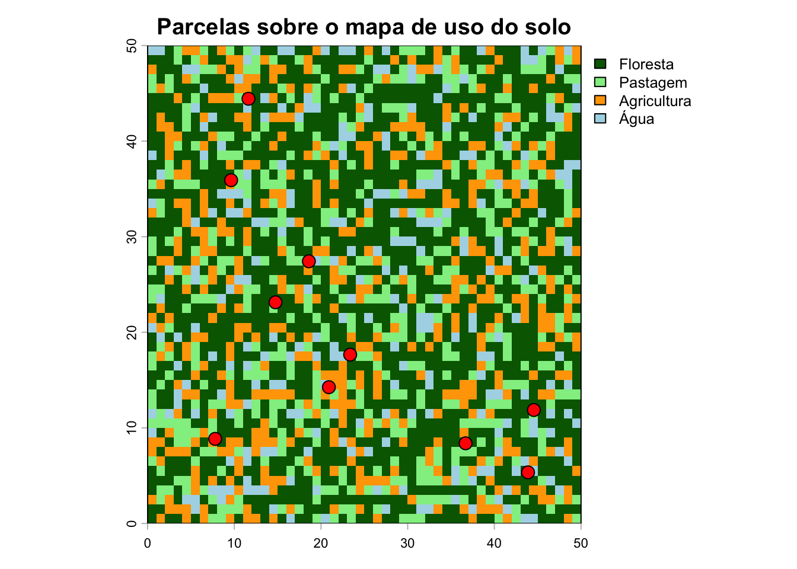
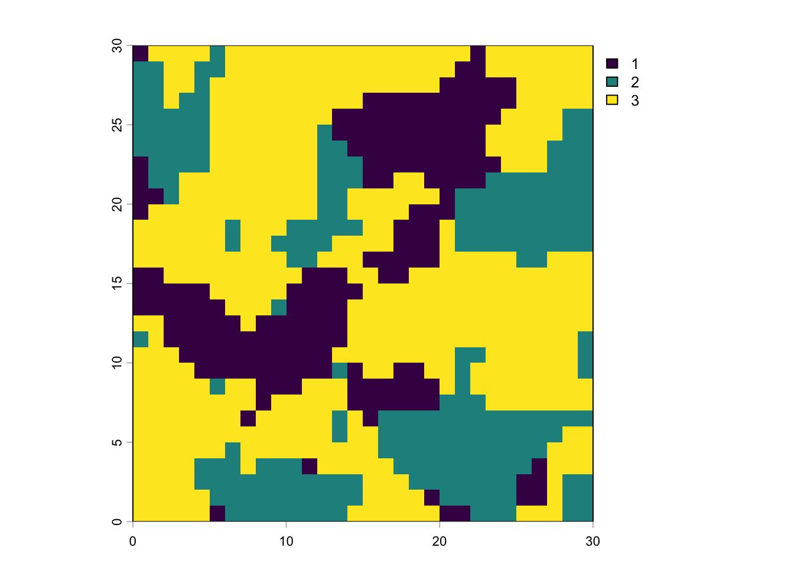
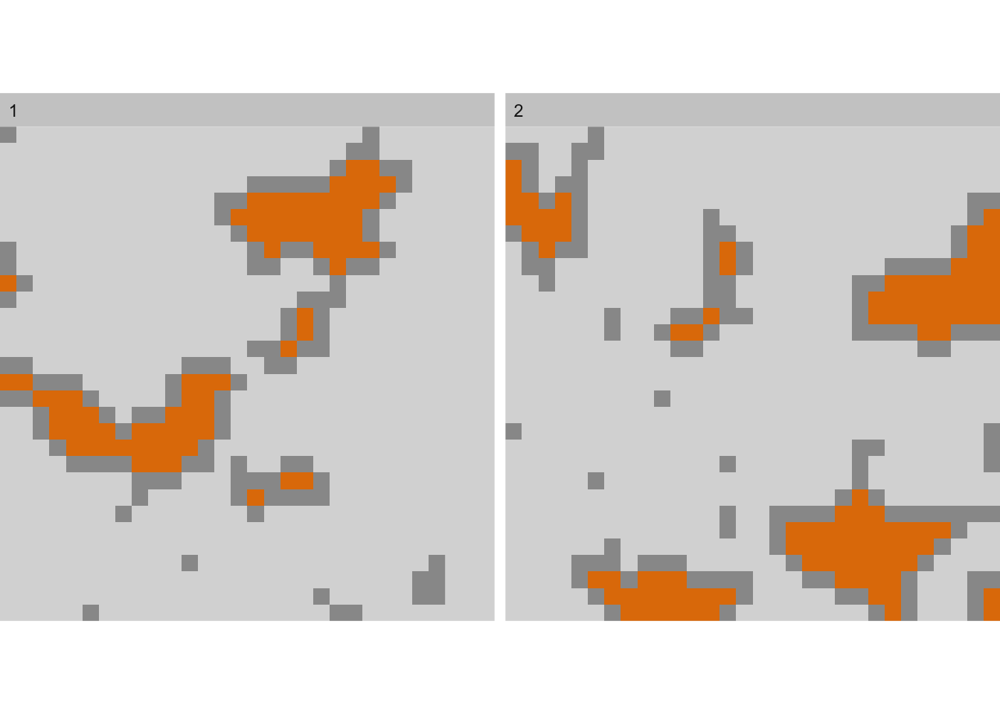

freq(r) # Frequência de cada classe (tabela de área)
layer value count
1 1 Floresta 1257
2 1 Pastagem 490
3 1 Agricultura 482
4 1 Água 271
2.
Mostrar código
library(sf)
Linking to GEOS 3.13.0, GDAL 3.8.5, PROJ 9.5.1; sf_use_s2() is TRUE
Mostrar código
# Criar pontos de amostragem simulados (ex: parcelas de campo)set.seed(7)parcelas <-st_as_sf(data.frame(id =1:10,longitude =runif(10, 5, 45),latitude =runif(10, 5, 45),riqueza =rpois(10, lambda =12) ),coords =c("longitude", "latitude"),crs =NA# sem CRS definido para este exemplo)# print(parcelas)# Visualizar sobre o rasterplot(r, col =c("darkgreen", "lightgreen", "orange", "lightblue"),main ="Parcelas sobre o mapa de uso do solo")plot(st_geometry(parcelas), add =TRUE, pch =21, bg ="red", cex =1.5)

3.
Mostrar código
library(landscapemetrics)library(terra)# Carregar paisagem de exemplo interna do pacotepaisagem <- terra::rast(landscapemetrics::landscape)# ---- VERIFICAÇÃO OBRIGATÓRIA antes de calcular métricas ----check_landscape(paisagem)
Warning: Caution: Coordinate reference system not metric - Units of results
based on cellsizes and/or distances may be incorrect.
layer crs units class n_classes OK
1 1 NA NA integer 3 ❓
Mostrar código
# -------- VER A PAISAGEM CRIADA ARTIFICIALMENTEplot(paisagem)

3. 1
Mostrar código
# ---- Métricas de PATCH (nível de fragmento) ----# Área de cada fragmento (em hectares)areas <-lsm_p_area(paisagem)head(areas)
# A tibble: 6 × 6
layer level class id metric value
<int> <chr> <int> <int> <chr> <dbl>
1 1 patch 1 1 area 0.0001
2 1 patch 1 2 area 0.0005
3 1 patch 1 3 area 0.0072
4 1 patch 1 4 area 0.0001
5 1 patch 1 5 area 0.0001
6 1 patch 1 6 area 0.008
3. 2
Mostrar código
# Distância ao vizinho mais próximo (isolamento)isolamento <-lsm_p_enn(paisagem)head(isolamento)
# A tibble: 6 × 6
layer level class id metric value
<int> <chr> <int> <int> <chr> <dbl>
1 1 patch 1 1 enn 7
2 1 patch 1 2 enn 4
3 1 patch 1 3 enn 2
4 1 patch 1 4 enn 6.32
5 1 patch 1 5 enn 5
6 1 patch 1 6 enn 2.24
3. 3
Mostrar código
# ---- Métricas de CLASS (nível de classe) ----# Proporção de cada classe na paisagemproporcao <-lsm_c_pland(paisagem)print(proporcao)
# A tibble: 3 × 6
layer level class id metric value
<int> <chr> <int> <int> <chr> <dbl>
1 1 class 1 NA pland 20.4
2 1 class 2 NA pland 26
3 1 class 3 NA pland 53.6
3. 4
Mostrar código
# Total de borda por classeborda <-lsm_c_te(paisagem)print(borda)
# A tibble: 3 × 6
layer level class id metric value
<int> <chr> <int> <int> <chr> <dbl>
1 1 class 1 NA te 181
2 1 class 2 NA te 203
3 1 class 3 NA te 296
3. 5
Mostrar código
# ---- Métricas de LANDSCAPE (nível de paisagem) ----# Índice de diversidade de Shannonshannon <-lsm_l_shdi(paisagem)print(shannon)
# A tibble: 1 × 6
layer level class id metric value
<int> <chr> <int> <int> <chr> <dbl>
1 1 landscape NA NA shdi 1.01
3. 6
Mostrar código
# Área totalarea_total <-lsm_l_ta(paisagem)print(area_total)
# A tibble: 1 × 6
layer level class id metric value
<int> <chr> <int> <int> <chr> <dbl>
1 1 landscape NA NA ta 0.09
4.
Mostrar código
# Calcular várias métricas simultaneamentemetricas <-calculate_lsm( paisagem,what =c("lsm_l_ta", # Área total"lsm_l_shdi", # Diversidade de Shannon"lsm_l_pd", # Densidade de fragmentos"lsm_c_pland", # Proporção de cada classe"lsm_c_np"# Número de fragmentos por classe ))
Warning: Please use 'check_landscape()' to ensure the input data is valid.
Mostrar código
print(metricas)
# A tibble: 9 × 6
layer level class id metric value
<int> <chr> <int> <int> <chr> <dbl>
1 1 class 1 NA np 9
2 1 class 2 NA np 13
3 1 class 3 NA np 6
4 1 class 1 NA pland 20.4
5 1 class 2 NA pland 26
6 1 class 3 NA pland 53.6
7 1 landscape NA NA pd 31111.
8 1 landscape NA NA shdi 1.01
9 1 landscape NA NA ta 0.09
4. 1
Mostrar código
# Listar TODAS as 130+ métricas disponíveislist_lsm() # descomente para ver a lista completa
# A tibble: 133 × 5
metric name type level function_name
<chr> <chr> <chr> <chr> <chr>
1 area patch area area and edge… patch lsm_p_area
2 cai core area index core area met… patch lsm_p_cai
3 circle related circumscribing circle shape metric patch lsm_p_circle
4 contig contiguity index shape metric patch lsm_p_contig
5 core core area core area met… patch lsm_p_core
6 enn euclidean nearest neighbor distance aggregation m… patch lsm_p_enn
7 frac fractal dimension index shape metric patch lsm_p_frac
8 gyrate radius of gyration area and edge… patch lsm_p_gyrate
9 ncore number of core areas core area met… patch lsm_p_ncore
10 para perimeter-area ratio shape metric patch lsm_p_para
# ℹ 123 more rows
4. 2
Mostrar código
# Visualizar fragmentos rotulados por classeshow_patches(paisagem, class ="all", labels =TRUE)
$layer_1

4. 3
Mostrar código
# Visualizar área de núcleo (interior dos fragmentos)show_cores(paisagem, class =c(1, 2))